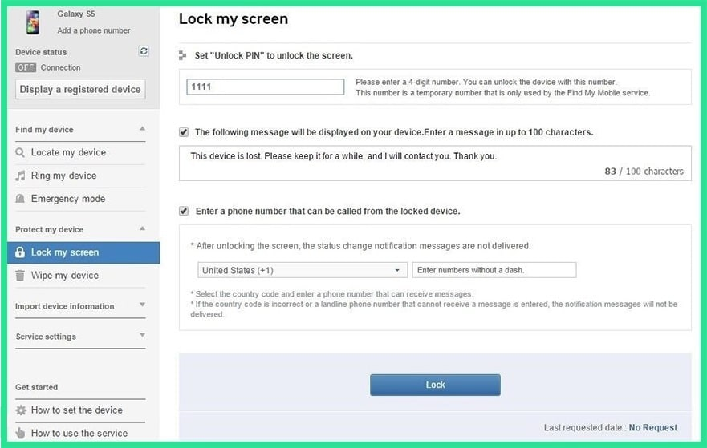

If you have a Samsung device, a similar service called Find My Mobile should be the first thing you try. Use any web browser, then log into your Samsung account. If you never set up a Samsung account, this method will not work, unfortunately. Also, some carriers, like Sprint, lock out this service, which is something to keep in find. Once you've logged into your Samsung account, click the "Lock my screen" button in the left-hand pane. From here, enter a new PIN in the first field, then click the "Lock" button near the bottom of the screen. Within a minute or two, your lock screen password should be changed to the PIN you just entered, which you can use to unlock your device.
